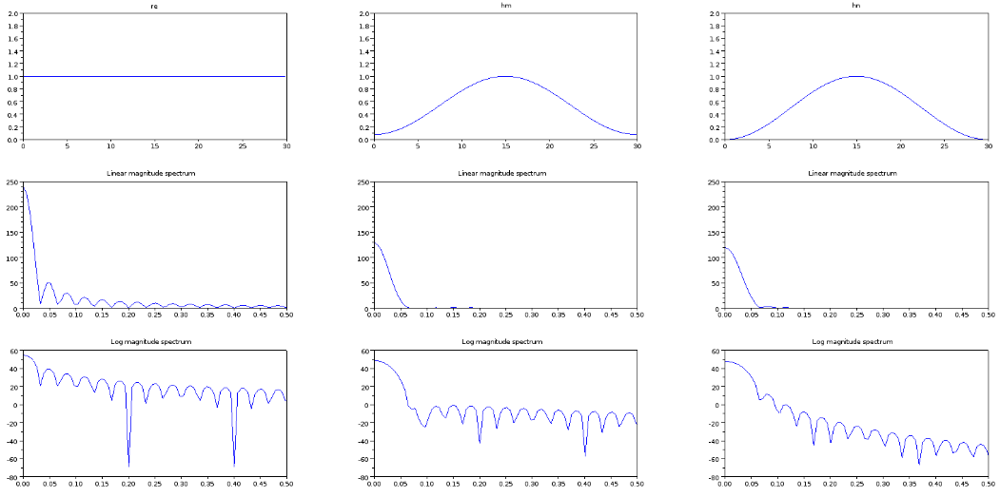
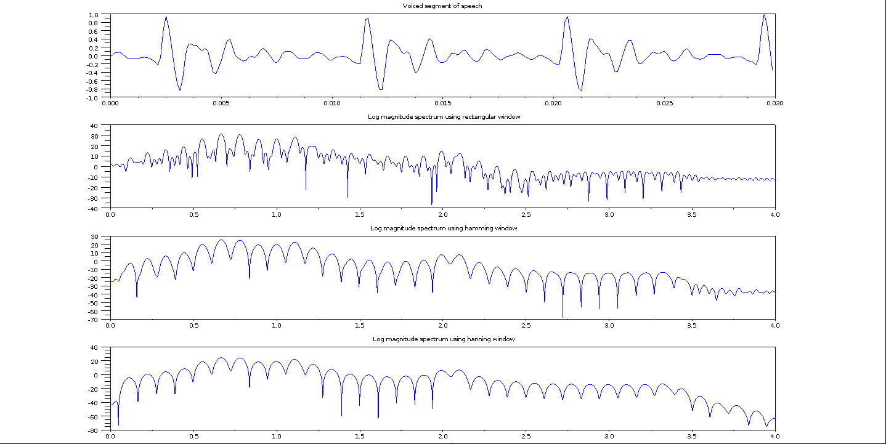
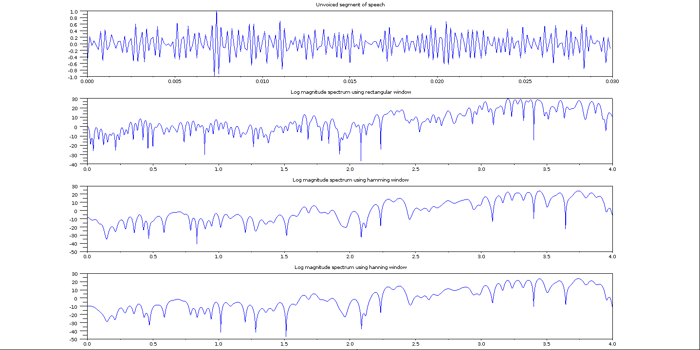

Shakshat Virtual Lab 
INDIAN INSTITUTE OF TECHNOLOGY GUWAHATI
Limitation of DTFT for the spectral analysis of speech
The procedure to generate the linear and and log magnitude spectrum is given below. We can observe that both the small and large magnitude frequency components are visible in the log magnitude spectrum compared to the linear magnitude spectrum.Figure 1 shows the speech signal, linear magnitude and log magnitude spectra of speech signals
[y,Fs,bits]=wavread('/media/A03036C33036A068/scilab/SA2.wav'); max_value=max(abs(y)); y=y/max_value; t=1/Fs:1/Fs:(length(y)/Fs); subplot(3,1,1);plot(t,y); xtitle('Speech signal waveform','time in seconds'); dfty=abs(fft(y)); leny=length(y) len=length(dfty) tt=linspace(1/Fs,Fs,length(dfty)); subplot(3,1,2);plot(tt,dfty); xtitle('Linear Magnitude Spectrum','frequency in Hz'); dftylog=10*log10(dfty); subplot(3,1,3);plot(tt,dftylog); xtitle('Log Magnitude Spectrum','frequency in Hz');

Fig.1: Speech signal and log magnitude DTFT spectra
Need for Short Time Fourier Transform:
Figure 2 shows the log magnitude spectrum of a segment of voiced speech, unvoiced speech and silence region. The procedure for generating the plots is given below. It has to be observed that the log magnitude spectrum for voiced, unvoiced and silence regions is different.
clear;clc;clf; [y,Fs,bits]=wavread('/media/A03036C33036A068/scilab/30msec_voiced2.wav');//input: voiced speech segment max_value=max(abs(y)); y=y/max_value; y=y(1:(Fs*.035));
t=1/Fs:1/Fs:(length(y)/Fs); subplot(3,3,1);plot(t,y); xtitle('Voiced Speech waveform','time in seconds');
dfty=abs(fft(y)); dfty=dfty(1:(length(dfty)/2)); tt=linspace(1/Fs,Fs/2,length(dfty)); subplot(3,3,4);plot(tt,dfty); xtitle('Linear Magnitude Spectrum','frequency in Hz');
dftylog=10*log10(dfty); subplot(3,3,7);plot(tt,dftylog); xtitle('Log Magnitude Spectrum','frequency in Hz');
[y,Fs,bits]=wavread('/media/A03036C33036A068/scilab/30msec_unvoiced.wav');//input: unvoiced speech segment max_value=max(abs(y)); y=y/max_value; y=y(1:(Fs*.035));
t=1/Fs:1/Fs:(length(y)/Fs); subplot(3,3,2);plot(t,y); xtitle('Unvoiced Speech waveform','time in seconds');
dfty=abs(fft(y)); dfty=dfty(1:(length(dfty)/2)); tt=linspace(1/Fs,Fs/2,length(dfty)); subplot(3,3,5);plot(tt,dfty); xtitle('Linear Magnitude Spectrum','frequency in Hz'); dftylog=10*log10(dfty); subplot(3,3,8);plot(tt,dftylog); xtitle('Log Magnitude Spectrum','frequency in Hz');
[y,Fs,bits]=wavread('/media/A03036C33036A068/scilab/silence.wav');//input: silence segment max_value=max(abs(y)); y=y/max_value; y=y(1:(Fs*.035));
t=1/Fs:1/Fs:(length(y)/Fs); subplot(3,3,3);plot(t,y); xtitle('Silence waveform','time in seconds');
dfty=abs(fft(y)); dfty=dfty(1:(length(dfty)/2)); tt=linspace(1/Fs,Fs/2,length(dfty)); subplot(3,3,6);plot(tt,dfty); xtitle('Linear Magnitude Spectrum','frequency in Hz'); dftylog=10*log10(dfty); subplot(3,3,9);plot(tt,dftylog); xtitle('Log Magnitude Spectrum','frequency in Hz');

Fig.2 : Segments of Voiced ,Unvoiced and Silence regions of speech and their linear and
STFT of speech:
For the short term spectral analysis, the given speech signal is divided into blocks of 10-30 ms with a shift of 5-10 ms. The log magnitude spectra is the procedure for computing the STFT from the speech signal is shown below, computed for each of the blocks. Figure 3 shows a 3D plot showing the log magnitude spectra of each of the frames of size 20 ms with a shift of 10 ms.
//function to compute short term fourier transform function [c] = stft(Speech_signal, Fs, Frame_size, Frame_shift, window_type) y=Speech_signal; Frame_size=Frame_size/1000; Frame_shift=Frame_shift/1000; max_value=max(abs(y)); y=y/max_value; t=1/Fs:1/Fs:(length(y)/Fs); subplot(2,1,1); plot(t,y); xtitle('Speech signal waveform','time in seconds'); Frame_length = Frame_size*Fs sample_shift = Frame_shift*Fs sum1=0;energy=0;autocorrelation=0;w=window(window_type,Frame_length);jj=1; for i=1:(floor((length(y))/sample_shift)-ceil(Frame_length/sample_shift)) k=1;yy=0; for j=(((i-1)*sample_shift)+1):(((i-1)*sample_shift)+Frame_length) yy(k)=y(j)*w(jj); jj=jj+1;k=k+1; end jj=1; dfty=abs(fft(yy)); dfty3d(:,i)=dfty(1:(length(dfty)/2)); end c=dfty3d; return(c); endfunction
[y,Fs,bits]=wavread('/media/A03036C33036A068/scilab/SA2.wav');//input: Speech signal Frame_size=20; //Input: Frame size in millisecond Frame_shift=10; //Input: Frame shift in millisecond window_type = 'hn'; //Input: window type-> 'hm' for hamming window, 'hn' for hanning window and 're' for rectangular window dfty3d=stft(y, Fs, Frame_size, Frame_shift, window_type); [rows,cols]=size(dfty3d); tt=1/Fs:1/Fs:(length(y)/Fs); kk=linspace(1/Fs,Fs/2000,rows); kkk=1/Fs:(Frame_shift/1000):(cols*(Frame_shift/1000)); subplot(2,1,2); plot3d(kk,kkk,dfty3d); xtitle('3D Representation of Short Term Linear Magnitude Spectrum ','Frequency in KHz','time-shift in seconds');

Fig.3 : Speech signal and its short term fourier transform plot
Concept of true and convolved spectra
Figure 4 illustrates the concepts of true and convolved spectrum of a sine wave. In the figure the true spectrum of the given 200 Hz sine wave is computed by taking DTFT of the whole sinusoidal signal. The convolved spectrum is represented by taking STFT of the 20-30 ms of short term segment of the sine wave. In the figure we can observe that the true spectra is represented by an impulse function at 200 Hz and the convolved spectrum is represented by the sinc function centered around 200 Hz . The procedure for illustrating the true and convolved spectrum is given below,
clear;clc;clf; Fs=4000; //sampling frequency f=200; //frequency of the sine wave zero=zeros(1:1000); t=1/Fs:1/Fs:.03; y1=sin(2*3.1416*f*t); subplot(3,2,1); t=t*1000; plot(t,y1); xtitle('200 Hz Synthetic sine wave of 30 ms duration','time in ms'); y1 = [zero y1 zero]; dfty=abs(fft(y1)); dfty=dfty(1:(length(dfty)/2)); dftylog=10*log(dfty); ff=linspace(1/Fs,Fs/2000,length(dfty)); subplot(3,2,3); plot(ff,dfty); xtitle('Linear Magnitude Spectrum','frequency in KHz'); subplot(3,2,5); plot(ff,dftylog); xtitle('Log Magnitude Spectrum','frequency in KHz');
t=1/Fs:1/Fs:.25; y2=sin(2*3.1416*f*t); t=t*1000; subplot(3,2,2); plot(t,y2); xtitle('200 Hz Synthetic sine wave of 250 ms duration','time in ms'); dfty=abs(fft(y2)); dfty=dfty(1:(length(dfty)/2)); dftylog=10*log(dfty); ff=linspace(1/Fs,Fs/2000,length(dfty)); subplot(3,2,4); plot(ff,dfty); xtitle('Linear Magnitude Spectrum','frequency in KHz'); subplot(3,2,6); plot(ff,dftylog); xtitle('Log Magnitude Spectrum','frequency in KHz');

Fig4 : Sine wave and its window region, and then linear & log magnitude spectra
Effect of windowing function on short term spectral analysis
Figure 5 shows various window functions like rectangular, hamming and hanning in the time and frequency domains. The procedure for generating the time and frequency domain representation of these window functions is given below.
clear; clc; clf; function [c] = dft_window(window_type, i) Fs=8000;j=i+3;k=i+6;ii=i; y=window(window_type, 240); zero=zeros(1:1000); y1=[y zero]; dfty=abs(fft(y1)); dfty=dfty(1:(length(dfty)/2)); for i=1:length(dfty) if(dfty(i) == 0) dfty(i)=0.001; end end dftylog=10*log(dfty); c=dftylog; t=((1/(1000*Fs):1/Fs:(length(y)/Fs)))*1000; subplot(3,3,ii);plot(t,y); xtitle(window_type); f=linspace(1/Fs,Fs/2000,length(dfty)); subplot(3,3,j);plot(f,dfty); xtitle('Linear magnitude spectrum'); subplot(3,3,k);plot(f,dftylog); xtitle('Log magnitude spectrum'); return(c); endfunction Fs=8000; window_type='re';i=1; dfty=dft_window(window_type, i);
window_type='hm';i=2; dfty=dft_window(window_type, i);
window_type='hn';i=3; dfty=dft_window(window_type, i);

Fig.5 : Rectangular, Hamming and hanning window functions and their linear & log magnitude spectra
Spectral Analysis of speech using window functions
Figure 6 short term magnitude spectra of a 30 ms voiced speech segment using a rectangular, hamming and hanning window functions. The procedure to computer the short term spectra of these voiced segment is given below. It has to be observed that, the STFT using the rectangular spectra is found to be more noisy compared to STFT spectra due to other window functions. This is due to the higher spectral leakage in rectangular window compared to other window functions.
clear; clc; clf; //function to compute log magnitude spectrum of a speech segment for a particular window type function [c] = stft(Speech_signal, Fs, window_type) y=Speech_signal; y2=0; zero=zeros(1:10000); w=window(window_type,length(y)); for i=1:length(y) y(i)=y(i)*w(i); end y2 = [zero y zero];
dfty=abs(fft(y2)); dfty=dfty(1:(length(dfty)/2)); dfty=10*log(dfty); c=dfty; return(c); endfunction
[y,Fs,bits]=wavread('/media/A03036C33036A068/scilab/30msec_voiced2.wav');//INPUT: speech segment max_value=max(abs(y)); y=y(1:240); y=y/max_value; t=(1/(1000*Fs):1/Fs:(length(y)/Fs)); subplot(4,1,1);plot(t,y); xtitle('Voiced segment of speech');
window_type='re'; dfty=stft(y, Fs, window_type); f=linspace(1/Fs,Fs/2000,length(dfty)); subplot(4,1,2);plot(f,dfty); xtitle('Log magnitude spectrum using rectangular window');
window_type='hm'; dfty=stft(y, Fs, window_type); f=linspace(1/Fs,Fs/2000,length(dfty)); subplot(4,1,3);plot(f,dfty); xtitle('Log magnitude spectrum using hamming window');
window_type='hn'; dfty=stft(y, Fs, window_type); f=linspace(1/Fs,Fs/2000,length(dfty)); subplot(4,1,4);plot(f,dfty); xtitle('Log magnitude spectrum using hanning window','Frequency in KHz');

Fig.6 : Segment of voiced speech & its log magnitude spectra using rectangular,hamming and hanning window functions.
Figure 7 shows the STFT log magnitude spectra of an unvoiced speech segment using rectangular, hamming and hanning window functions. The procedure for computing same is given below
clear; clc; clf; //function to compute log magnitude spectrum of a speech segment for a particular window type function [c] = stft(Speech_signal, Fs, window_type) y=Speech_signal; y2=0; zero=zeros(1:10000); w=window(window_type,length(y)); for i=1:length(y) y(i)=y(i)*w(i); end y2 = [zero y zero];
dfty=abs(fft(y2)); dfty=dfty(1:(length(dfty)/2)); dfty=10*log(dfty); c=dfty; return(c); endfunction
[y,Fs,bits]=wavread('/media/A03036C33036A068/scilab/30msec_voiced2.wav');//INPUT: speech segment max_value=max(abs(y)); y=y(1:240); y=y/max_value; t=(1/(1000*Fs):1/Fs:(length(y)/Fs)); subplot(4,1,1);plot(t,y); xtitle('Voiced segment of speech');
window_type='re'; dfty=stft(y, Fs, window_type); f=linspace(1/Fs,Fs/2000,length(dfty)); subplot(4,1,2);plot(f,dfty); xtitle('Log magnitude spectrum using rectangular window');
window_type='hm'; dfty=stft(y, Fs, window_type); f=linspace(1/Fs,Fs/2000,length(dfty)); subplot(4,1,3);plot(f,dfty); xtitle('Log magnitude spectrum using hamming window');
window_type='hn'; dfty=stft(y, Fs, window_type); f=linspace(1/Fs,Fs/2000,length(dfty)); subplot(4,1,4);plot(f,dfty); xtitle('Log magnitude spectrum using hanning window','Frequency in KHz');

Fig.7 : Segment of voiced speech and its magnitude spectra using hamming, hanning and rectangular window function.
Effect of window size on short term spectral analysis of speech
Figure 8 shows a short term log magnitude spectra of voiced segment using a frame size of 3 ms, 30 ms and 300 ms. Here we can observe that the poor spectral resolution due to smaller window size in case of 3 ms window.Also poor time resolution can be observed in case of 300 ms window.The log magnitude spectrum of the 30 ms windowed speech segment shows vocal tract spectral envelope and excitation information in terms of pitch and its harmonics. The procedure to generate the log magnitude spectrum of different window sizes is given below,
clear; clc; clf; //function to compute log magnitude spectrum of a speech segment for a particular window type function [c] = stft(Speech_signal, Fs, window_type) y=Speech_signal; y2=0; zero=zeros(1:10000); w=window(window_type,length(y)); for i=1:length(y) y(i)=y(i)*w(i); end y2 = [zero y zero];
dfty=abs(fft(y2)); dfty=dfty(1:(length(dfty)/2)); dfty=10*log(dfty); c=dfty; return(c); endfunction
[y,Fs,bits]=wavread('/media/A03036C33036A068/scilab/SA2.wav');//input: speech signal of atleast 300 ms duration max_value=max(abs(y)); y=y(1:.30*Fs); y1=y(1:.003*Fs); no_zeros=length(y)-length(y1); zero=zeros(1:no_zeros); y=[y1 zero]; y=y/max_value; t=((1/(1000*Fs):1/Fs:(length(y)/Fs)))*1000; subplot(3,2,1);plot(t,y); xtitle('Unvoiced segment of speech 3ms duration');
window_type='hm'; dfty=stft(y, Fs, window_type); f=linspace(1/Fs,Fs/2000,length(dfty)); subplot(3,2,2);plot(f,dfty); xtitle('Log magnitude spectrum');
y=yy(1:.30*Fs); y1=y(1:.03*Fs); no_zeros=length(y)-length(y1); zero=zeros(1:no_zeros); y=[y1 zero]; y=y/max_value; t=((1/(1000*Fs):1/Fs:(length(y)/Fs)))*1000; subplot(3,2,3);plot(t,y); xtitle('Unvoiced segment of speech 30ms duration');
window_type='hm'; dfty=stft(y, Fs, window_type); f=linspace(1/Fs,Fs/2000,length(dfty)); subplot(3,2,4);plot(f,dfty); xtitle('Log magnitude spectrum');
y=yy(1:.30*Fs); y1=y(1:.3*Fs); no_zeros=length(y)-length(y1); zero=zeros(1:no_zeros); y=[y1 zero]; y=y/max_value; t=((1/(1000*Fs):1/Fs:(length(y)/Fs)))*1000; subplot(3,2,5);plot(t,y); xtitle('Unvoiced segment of speech 300ms duration');
window_type='hm'; dfty=stft(y, Fs, window_type); f=linspace(1/Fs,Fs/2000,length(dfty)); subplot(3,2,6);plot(f,dfty); xtitle('Log magnitude spectrum');

Fig.8 : Segments of 3,30 &300 msec of voiced speech and their log magnitude spectra.